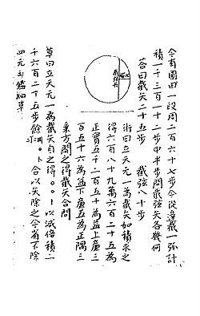

c. 1260-c. 1320
Zhu Shijie

Portrait: Zhu Shijie, Public domain, Wikimedia Commons.
Events (4)
- 544Interpolation and finite differences in Chinese astronomy and mathematics
systematiser · Numerical analysis
- 620Numerical solution of polynomial equations in China (Ruffini-Horner)
systematiser · Numerical analysis
- 1050Binomial coefficient triangle in China
developer · Combinatorics
- 1248Tian yuan (celestial element) algebra
systematiser · Algebra